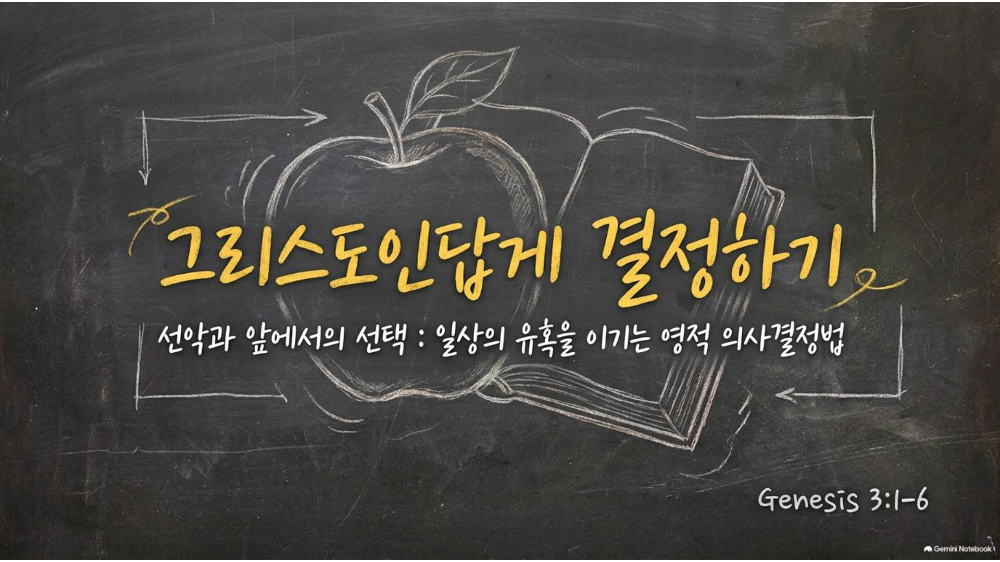

2026.08.16 주일 설교 묵상
그리스도인답게 결정하기
선악과 앞에서의 선택, 유혹의 4단계와 분별의 5가지 질문으로 걷는 7일의 여정
주일 설교 요약
본문: 창세기 3장 1절 ~ 6절 (개역개정)
1940년대, 나란히 이름을 알리던 두 젊은 사역자 빌리 그레이엄과 찰스 템플턴은 "성경을 100% 다 믿을 수 있는가"라는 같은 질문 앞에서 정반대의 길을 택했습니다. 한 사람은 자신의 이성을, 한 사람은 하나님의 말씀을 선택했습니다. 이 갈림길은 오늘 창세기 3장에서 하와가 선악과 앞에 섰던 순간과 정확히 같습니다. 사탄은 ①결핍에 집중하게 하고 ②말씀을 내 상황에 맞게 왜곡하게 하고 ③내가 내 인생의 주인이 되고 싶게 만들고 ④결국 방관하게 만드는 네 단계로 우리를 무너뜨립니다. 이번 주 묵상은 이 네 단계와, 흔들릴 때 붙잡을 다섯 가지 분별의 질문을 하루씩 짚어봅니다.
1940년대, 나란히 이름을 알리던 두 젊은 사역자 빌리 그레이엄과 찰스 템플턴은 "성경을 100% 다 믿을 수 있는가"라는 같은 질문 앞에서 정반대의 길을 택했습니다. 한 사람은 자신의 이성을, 한 사람은 하나님의 말씀을 선택했습니다. 이 갈림길은 오늘 창세기 3장에서 하와가 선악과 앞에 섰던 순간과 정확히 같습니다. 사탄은 ①결핍에 집중하게 하고 ②말씀을 내 상황에 맞게 왜곡하게 하고 ③내가 내 인생의 주인이 되고 싶게 만들고 ④결국 방관하게 만드는 네 단계로 우리를 무너뜨립니다. 이번 주 묵상은 이 네 단계와, 흔들릴 때 붙잡을 다섯 가지 분별의 질문을 하루씩 짚어봅니다.
주일 설교 슬라이드
1 / 23

좌우 화살표를 눌러 슬라이드를 넘겨보세요.
매일 이렇게 새로워지세요
- 시선 점검하기: 오늘 내 마음이 "이미 받은 것"과 "아직 없는 것" 중 어디에 더 오래 머무는지 살펴봅니다.
- 말씀 그대로 받기: 내 상황에 맞춰 말씀을 줄이거나 늘리고 있지 않은지 정직하게 돌아봅니다.
- 결재권 내려놓기: "내가 알아서 할게"라고 붙잡고 있던 결정 하나를 하나님께 다시 내어드립니다.
- 다섯 질문 던지기: 중요한 결정 앞에서 오늘 배운 다섯 가지 질문에 실제로 통과시켜 봅니다.
요일별 묵상 여정
월요일
제목
성경구절